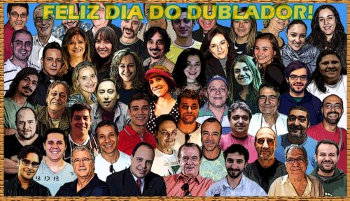

Dia do Dublador: A Voz Que Dá Vida aos Personagens
Você já parou para pensar na mágica por trás da voz que te emociona em um filme, te faz rir em um desenho animado ou te transporta para mundos incríveis em séries e games? No Dia do Dublador, celebrado em 29 de junho, rendemos homenagem aos artistas que emprestam suas vozes e talento para dar vida a personagens inesquecíveis, conectando culturas e histórias através da dublagem brasileira, reconhecida mundialmente pela sua qualidade e paixão.
Este site é uma celebração a esses profissionais. Aqui, você vai mergulhar no universo da dublagem, descobrindo sua rica história no Brasil, conhecendo os rostos e as vozes por trás de ícones da cultura pop e explorando curiosidades fascinantes sobre essa arte.
Galeria de Vozes e Emoções

Conheça a História da Dublagem no Brasil
Explore a jornada da dublagem desde seus primórdios até os dias atuais, e como essa arte se tornou fundamental no Brasil.
Ver a HistóriaDubladores e Personagens Icônicos
Descubra quem são os mestres da voz por trás de seus personagens favoritos e as histórias que eles eternizaram.
Conhecer Dubladores